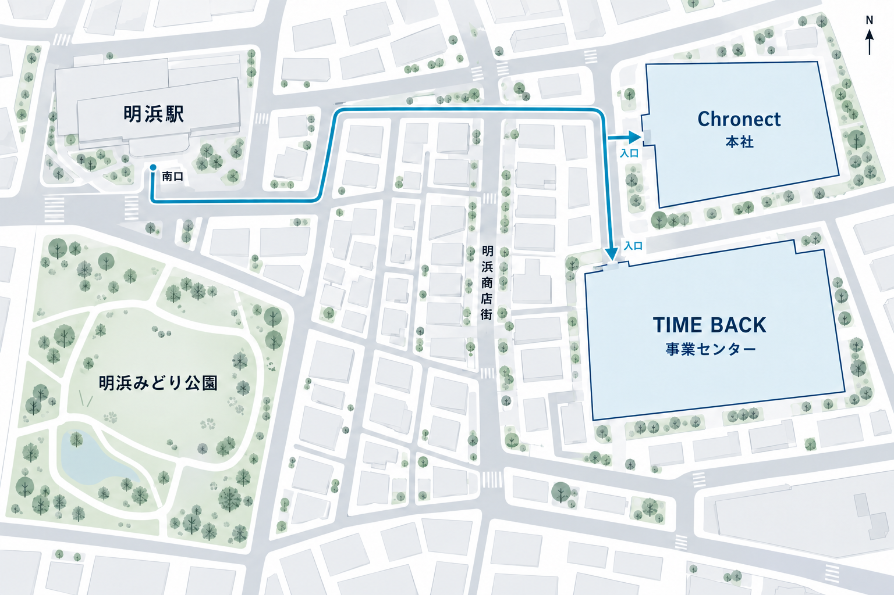

生活環境での移動支援
歩行、立ち止まり、経路の切り替えなどを対象に、周辺環境の認識と支援の安定性を確認します。歩道幅や人の往来が異なる場所で、案内と安全判断の精度を評価します。
USER PARTICIPATION PROGRAM
生活の中で確かめる、技術とサービスの使いやすさ。
利用者の協力を得て、日常環境に即した検証を行います。
OVERVIEW
ユーザー参加型実証プログラムは、TIME BACKの登録利用者に協力いただき、行動支援技術や製品・サービスの利用環境を評価する取り組みです。Chronectの研究基盤と提携企業の運用環境を組み合わせ、施設内の検証では把握しにくい使いやすさや環境への適応を確認します。
VERIFICATION AREAS
歩行、立ち止まり、経路の切り替えなどを対象に、周辺環境の認識と支援の安定性を確認します。歩道幅や人の往来が異なる場所で、案内と安全判断の精度を評価します。
模擬売場や協力店舗で、商品の見つけやすさ、案内表示、売場内の移動を検証します。結果は、マーケティングリサーチや売場設計の改善に活用します。
画面表示や操作手順が、利用環境に適しているかを確認します。操作に要する時間、手順の分かりやすさ、利用時の負担を整理し、機器やインターフェースの改善につなげます。
ACCESS & FIELD ENVIRONMENT
TIME BACK事業センターは、運営会社であるChronectの本社に隣接しています。ご来訪の際は、明浜駅南口からの案内経路をご確認ください。

生活環境実証エリアは、TIME BACK事業センター内に設けた屋内の検証施設です。実際の街路や協力店舗等で行う検証では、案件の目的と当日の環境条件に応じて実施経路や確認地点を設定し、地域の通行と両立するよう実施時間やスタッフの配置を調整しています。
TIME BACK事業センターでは、明浜商店街振興会と協力し、地域の環境美化に取り組んでいます。社員が定期的な清掃活動に参加し、明浜みどり公園や駅周辺、商店街で、ごみ拾いや落ち葉の回収を行っています。地域の皆さまとの交流を大切にしながら、身近な活動を継続しています。
PROCESS & MANAGEMENT
依頼企業と検証目的、対象環境、評価項目、取得情報を確認し、参加条件と実施計画を定めます。
参加者に内容と情報の取り扱いを説明し、必要な確認を行います。体調や環境条件が基準を満たさない場合は実施を見送ります。
専任スタッフが状態と周辺環境を確認しながら検証します。安全基準に応じて条件を調整し、必要な場合は中止します。
確認項目ごとに結果を集計し、依頼企業へ報告します。検証結果は支援条件や製品・サービスの改善に反映します。
案件ごとの目的に必要な範囲で状態・位置・操作等の記録を取得します。依頼企業への報告は集計結果を基本とし、個人単位の情報は所定の権限と管理基準に基づいて取り扱います。